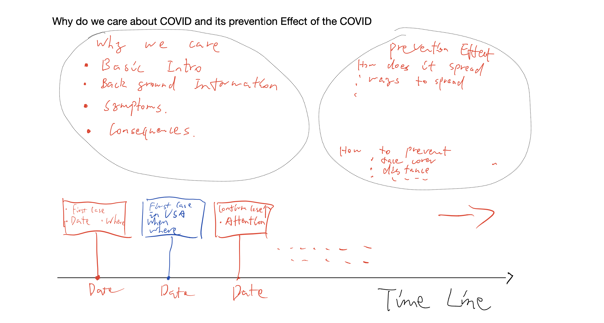
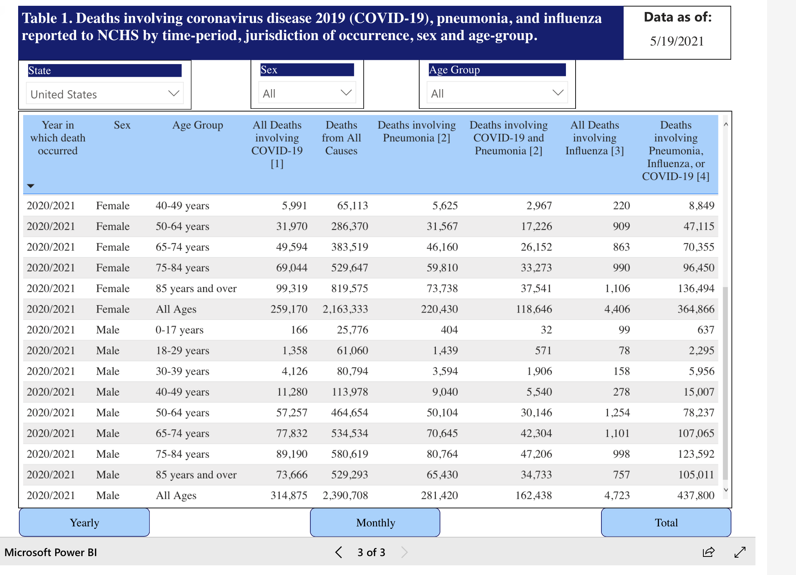
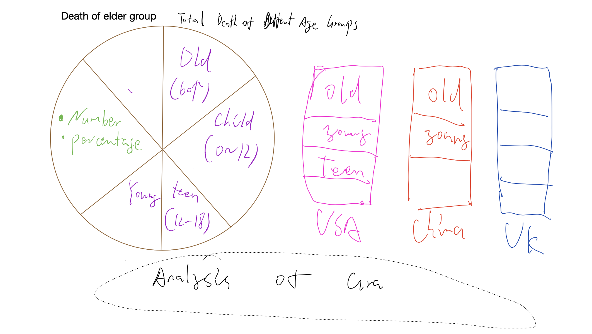
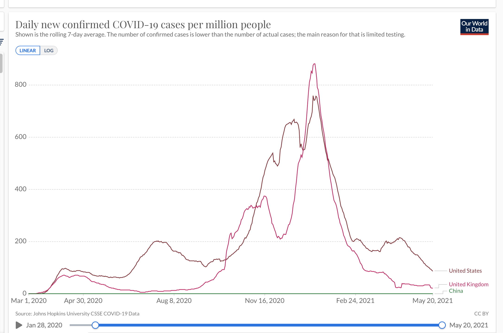
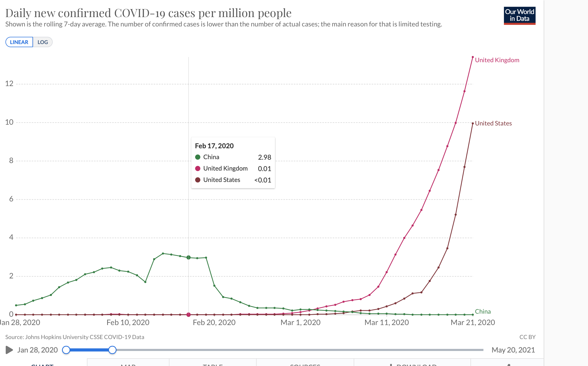
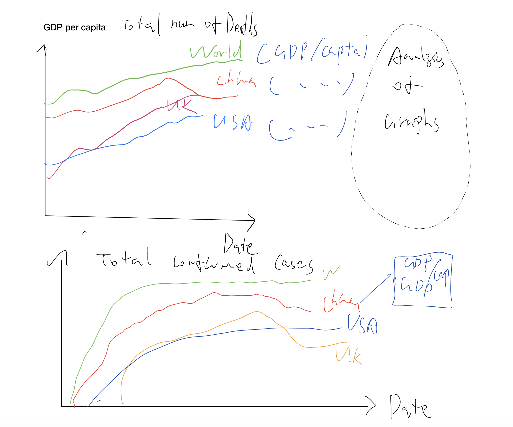

Through the visualizations of the COVID data, we will analyze the importance and the impact of COVID in different regions around the world.
COVID-19 has been a worldwide pandemic, people took it as an emergency when it happened in Winter 2020. Each person infected with seasonal influenza may infect approximately 1.3 other people. For SARS-CoV-2 (the virus that causes Covid-19), it is estimated to infect about three times as many people (estimated at 2 to 4). This number is called the reproductive factor, or “R0,” and you may see it referred to that way. This will lead to many, many more cases very quickly, and may overwhelm an already burdened medical system. It’s true that for healthy people under age 50, it’s not especially lethal — the mortality rate is quite low, but still up to 20 times higher than flu. But it becomes more lethal for older patients. The following chart gives good estimates for mortality rate by age bracket compared to flu. The WHO estimates an average mortality rate of 3.4%, which is around 100 times higher than flu, but does note that average is across age brackets. And while you may not die, you may give it to others, which will overwhelm our healthcare system. 
Table: display the number of deaths caused by Covid 19 in each age group testData Source We can draw a pie graph and a bar chart with composition of different age groups to display what we’ve observed from the above table. We can add small titles of China, USA and UK to separately display the pie chart of them. After we found the result we may observe that older people are much more vulnerable to the pandemic than younger, so we wonder if the seriousness of this pandemic is related to the occupancy of old people in a country. From the above graph, China is absolutely an exception from our guess, so indeed there are other factors of prevention.
 From observing the two line chart which represents the relationship between development of GDP and number of deaths and number of confirmed cases respectively, we can see that there is a close relationship as well. Data Source
The data below is the number of confirmed cases and death cases.
From the graphs above, we can see that there is a clear distinction between the number of confirmed cases and death cases for different region. Take Gross Domestic Product(GDP) per capita, Population density, Human Development Index (HDI), life expectancy, and the number of people who are aged 65 or older as possible social factors that might affect the outcome of COVID-19 cases, we will specifically focus on these dimensions in our exploration.
Try to select the desired dimension from the drop down menu to encode the color. You can also filter the expected line by brushing the interval on each dimension axis!
Data source reference to COVID-19 dataset from Our world in data in our visualization. Data was normalized. The visualization design above reference to Parallel Coordinates Visualization by Mike Bostock in Observable notebook.
Within one standard deviation of average GDP across 174 countries in our cleaned dataset, GDP and the number of total cases and the number of total deaths shows a positive correlation. Beyond one standard deviation, in general, as GDP increases the number of total cases increases as well as the number of total deaths.
Population density is positively correlate with the total cases and the total deaths for each location one standard deviation below mean population density. The total cases and total deaths shows a decreasing trend as the population density beyond the mean increasing.
In general, HDI is positively correlated with the number of total cases and the number of total deaths.
Generally, as the number of people who are aged 65 or older increases, the number of total cases increases. It is interesting to note that locations that have the number of people who are aged 65 or older 1.5 standard deviation above the mean with the number of death below the mean have GDP above the mean.
Observing the location that have total vaccinations 0.5 standard deviation above the mean, we notice that most of the locations have GDP, HDI, and life expectancy above the mean. Some of those locations might have relatively high number of total cases, but most of them have relatively low number of total deaths.
From the visualization, we did not observe a clear pattern between each dimension and the COVID outcome. This implies that these factors alone do not have a significant impact on COVID-19 cases. The disparities in COVID cases might be a synergistic effect of multiple social factors. Further research is needed.
mRNA - mRNA vaccines are a new type of vaccine to protect against infectious diseases. - MRNA vaccines teach our cells how to make a protein—or even just a piece of a protein—that triggers an immune response inside our bodies. - The benefit of mRNA vaccines, like all vaccines, is those vaccinated gain protection without ever having to risk the serious consequences of getting sick with COVID-19.
Inactivated - Inactivated vaccines use the killed version of the germ that causes a disease. - Inactivated vaccines usually don’t provide immunity (protection) that’s as strong as live vaccines. So people may need several doses over time (booster shots) in order to get ongoing immunity against diseases.
mRNA Data from 43,448 participants, half of whom received BNT162b2 and half of whom received placebo, showed that the vaccine candidate was well tolerated and demonstrated 95% efficacy in preventing COVID-19 in those without prior infection 7 days or more after the second dose.
Inactivated Based on 144 participants in the phase one trial and 600 in the phase two trial - meant the vaccine was “suitable for emergency use”.
Visualization Design: A map of United States.
Interaction with color dots shows the total doses given, the number of people fully vaccinated, and the percentage of people fully vaccinated by state.
In the United States, the total vaccinations doses given is 294M, the population who are fully vaccinated is 135M, and the percentage of population fully vaccinated is 41%.
Among all the states, Republic of Palau has the highest percentage (68.9%) of population who are fully vaccinated due to the small population base. Among the states with high population base, Massachusetts has the highest percentage (53.4%) of population who are fully vaccinated. Then, the second and the third highest states are New Jersey (48.7%) and Washington (46.4%).
This project was created for the course CSE412.